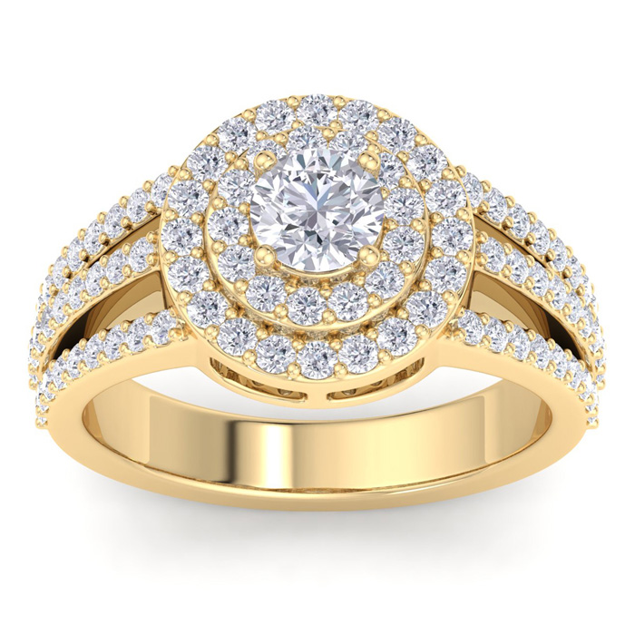
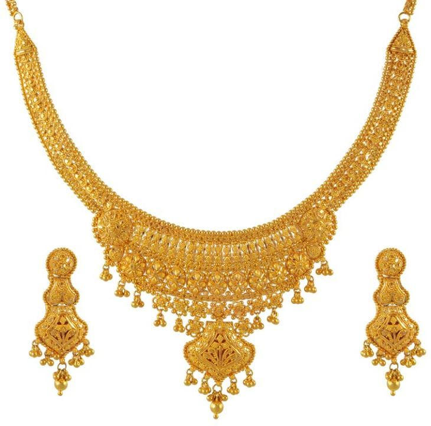
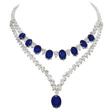
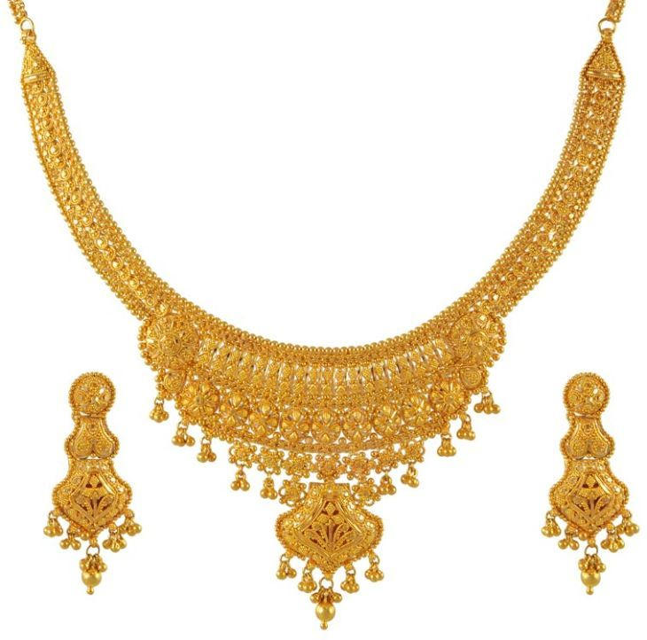
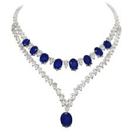

មាសគីឡូ- Gold 9999
មាសគីឡូ- Gold 9999
Our team of design consultants guides you through each step of designing the perfect ring. Get expert advice and guidance on your diamond or gemstone choice and ring design. Free Sketch Design. Diamond jewellery · Diamond Jewelry Set · Diamond Jewelry Designs · Diamond Bracelet Design · Diamond Bracelet · Gold Bracelet Simple · Gold Bracele
មាសគីឡូ- Gold 9999Gold Cast Bar – 1 Kg (999.9) · Gold Grain – 1000 Grams – (995.0) (999.9) – Purity Pure gold has 24 carats - that is, 24/24 parts by weight of gold - and thus a fineness of 999.9‰ (999.9 thousand parts). Some mints and mints


 ពេជ្រធម្មជាតិ- Natural Diamonds
ពេជ្រធម្មជាតិ- Natural DiamondsMost natural diamonds have ages between 1 billion and 3.5 billion years. Most were formed at depths between 150 and 250 kilometres (93 and 155 mi) Natural Diamonds is the destination for all things natural diamonds. Get diamond style & engagement ring inspiration.


Necklaces, Bracelets, Earrings, Rings, Anklets.High-Quality Jewellery For Women - Personalised Jewellery Quality Guaranteed. Free Worldwide Shipping.

 ក្រវិល- Earrings
ក្រវិល- EarringsMeet timeless, twinkling drop earrings, gold hoop earrings, and more—made to mix, match, and inspire. From a simple, sparkly studs earring to stackable gold Earrings are one of the most timeless and versatile pieces of jewelry. They have been worn by women for centuries and have evolved into a must-have accessory
 ខ្សែករ-Necklaces
ខ្សែករ-NecklacesDiscover our Range of Diamond Bracelets. Timeless Bespoke In-house and International Designs. Luxury Specialists. Bridal Jewellery. Specialty Diamonds. Exclusive Collections. Iconic Jewellery
 



 ខ្សែដៃ-Bracelets
ខ្សែដៃ-BraceletsFind sterling silver bracelets and cuffs with gemstones at Sonara Jewelry. Our Competitive Pricing Strategy on Our Wholesale Sterling Silver Jewelry Will Not Be Beat. Wholesale Jewelry. Excellent Quality Diamond. Same Day 2-day Shipping. Diamond District LA. Styles: Opal Jewelry


 ខ្សែជើង-Anklets
ខ្សែជើង-AnkletsSome of the popular anklets for women available on Etsy include: anklets for women sterling silver, anklets for women boho, anklets for women beach, toe rings